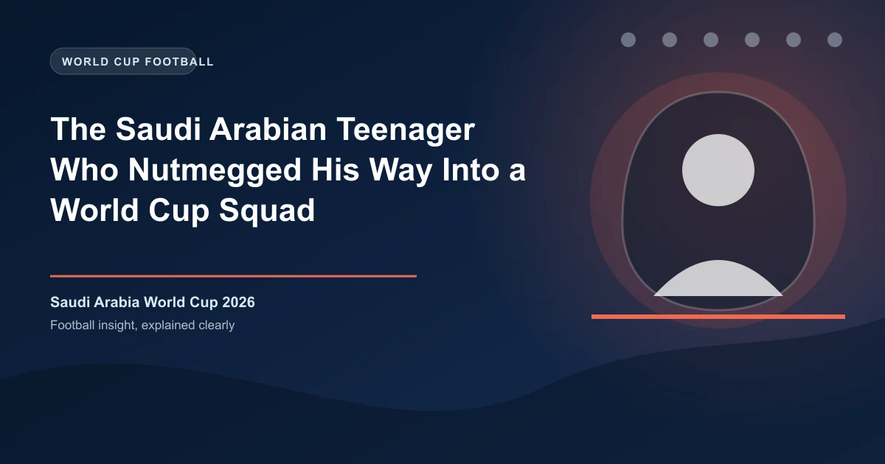

In the narrow streets of Al-Sharafiya district in Jeddah, every flat concrete patch is a football pitch. Goals are marked by school bags. Teams are chosen by the best two players taking turns picking. There are no referees. There are no age groups. A 12-year-old might be marking a 22-year-old. The only rule that matters is the unwritten one: if you get nutmegged, you never live it down. For Over/Under betting predictions on Saudi Arabia's World Cup matches, check our analysis page.
This is where the new generation of Saudi Arabian footballers learned their craft. Not in the pristine, air-conditioned academies that the Saudi Pro League has built with its recent oil wealth. Not in the floodlit training complexes of Al-Hilal and Al-Ittihad. On concrete. Under the sun. With a worn-out ball that had long since lost its pattern. And it shows in the way they play. Saudi Arabia's 2026 World Cup squad will be the youngest, most technically confident, and most fearless the nation has ever sent to a tournament. They are a generation forged on street football — and the nutmeg is their signature.
Seven players in Saudi Arabia's 2026 World Cup squad are 23 or younger. Four of them — Musab Al-Juwayr (22), Feras Al-Buraikan (26), Abdullah Al-Hamdan (25), and the breakout star of the 2025 AFC Asian Cup, Abdulelah Hawsawi (20) — grew up playing street football. They were the ones nutmegging older kids, doing rainbow flicks in narrow alleyways, and being told to"get off the street" by shopkeepers who feared for their windows.
The transition from street to academy is not always easy. Saudi Arabia's football system has historically been top-heavy, with the big four clubs — Al-Hilal, Al-Ittihad, Al-Ahli, and Al-Nassr — dominating the talent pipeline. But the Saudi Pro League's transformation under the Public Investment Fund (PIF) has had a trickle-down effect. The investment in youth academies, the creation of the Saudi Second Division, and the expansion of scouting networks into smaller cities have dramatically widened the talent pool.
Musab Al-Juwayr is the poster child of this new era. Born in 2004 in Riyadh, he was spotted playing in a local tournament at age 11 by an Al-Hilal scout. He joined the club's academy and rose through the ranks, making his first-team debut at 17. By 19, he was a regular starter. By 20, he was playing in the World Cup. In Saudi Arabia's group-stage match against Argentina in 2022, Al-Juwayr came off the bench and completed more dribbles per minute than any player on the pitch. His fearlessness — the willingness to try something audacious in the biggest moment — was pure street football.
How Saudi Arabia's young stars rose through unconvential paths:
Saudi Arabia's football transformation is not accidental. It is a direct result of the government's Vision 2030 plan, which identified sports development as a strategic priority. The PIF's takeover of the four biggest clubs, the recruitment of global stars like Cristiano Ronaldo and Neymar, and the investment in youth infrastructure were all part of a deliberate strategy. The goal was not just to make the Saudi Pro League entertaining. It was to create an environment where young Saudi players could develop by training alongside — and nutmegging — the best players in the world. Visit our betting options guide for a complete overview of every market available for World Cup 2026.
"Training with Cristiano Ronaldo every day makes you better," said Feras Al-Buraikan. "You learn from his movement, his finishing, his mentality. Young players in Saudi Arabia now have role models they can watch in their own stadiums."
The data backs this up. Ten years ago, no Saudi player played in Europe's top five leagues. In 2026, at least three Saudi players have made moves to European clubs: Saud Abdulhamid (now at Roma), Ali Al-Hassan (who joined Al-Ittihad but had a stint on loan in Portugal), and Musab Al-Juwayr (who has offers from La Liga). The export of Saudi talent to Europe is the clearest sign that the system is working.
Saudi Arabia's victory over Argentina in the 2022 World Cup — one of the greatest upsets in the tournament's history — was a generation-defining moment. But it was not just the result that mattered. It was the way Saudi Arabia played. They pressed high. They took risks. They played through Argentina's press rather than just defending. The team's average age in that match was 27.8. The 2026 squad's average age is expected to be under 26.
The 2022 team showed Saudi Arabia's young players that they could compete on the world stage. The 2026 team will show that they can do so consistently. After a disappointing 2023 Asian Cup where Saudi Arabia were eliminated in the Round of 16, the team regrouped under new coach Roberto Mancini, who replaced Herv� Renard after the tournament. Mancini's appointment was controversial — he had just led Italy to the European Championship in 2021 and had been sacked after failing to qualify for the 2022 World Cup — but his pedigree is undeniable.
Under Mancini, Saudi Arabia qualified for the 2026 World Cup with two matches to spare, topping their group ahead of Jordan and Tajikistan. They have scored 17 goals in 8 qualifying matches — nearly double the rate of any previous qualifying campaign. They have been drawn in a group that includes Argentina again, along with Denmark and New Zealand. The chance to face Argentina once more, four years after Salem Al-Dawsari's wonder goal stunned Lionel Messi in Lusail, is the kind of narrative that writes itself.
"We are not afraid of anyone," said Mancini in a press conference after qualification was confirmed. "The young players in this squad have no fear. They grew up watching their country beat Argentina. They believe they can beat anyone."
That belief — instilled on concrete pitches in Jeddah, Riyadh, and Mecca — is the defining characteristic of this Saudi generation. They nutmeg because they can. They take risks because they have always taken risks. They are not burdened by the weight of history because their history is still being written. And when they step onto the pitch at the 2026 World Cup, with the world watching and Argentina waiting, they will do what they have always done. They will nutmeg, they will dribble, they will try the audacious. Because that is how they learned the game.
Get free football predictions for every match of the tournament.
Generate optimized accumulator combinations from today's AI-powered predictions. Set your target odds and get instant ticket suggestions.
Free Ticket Builder →